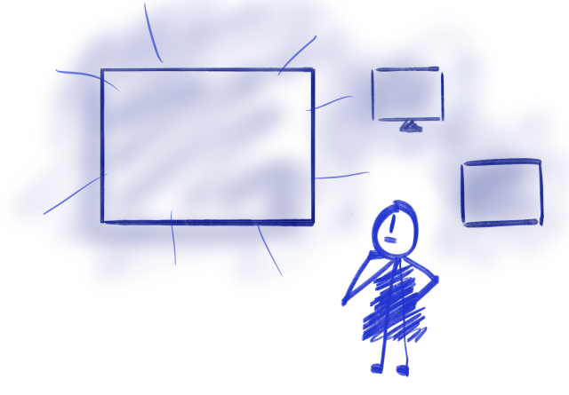
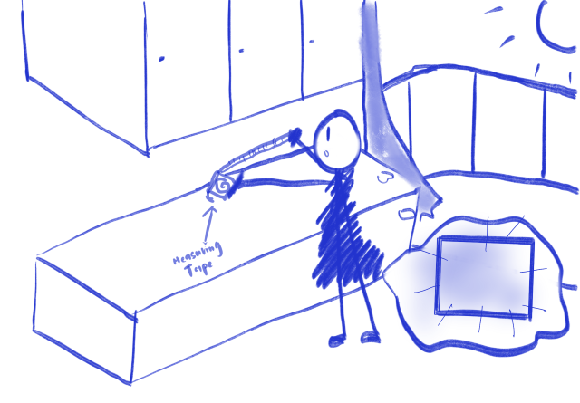
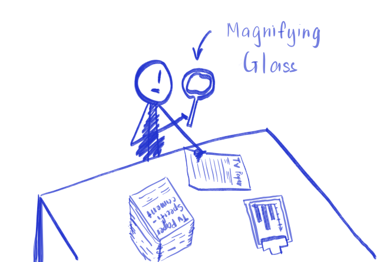
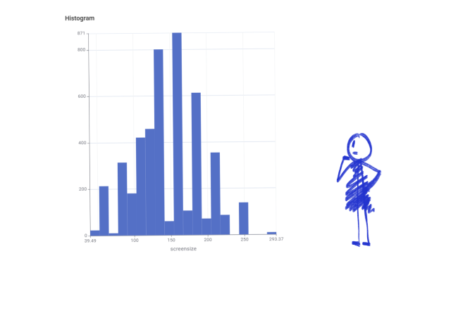
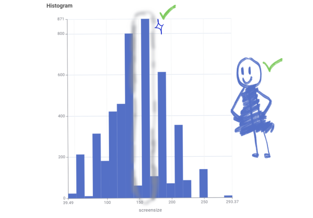
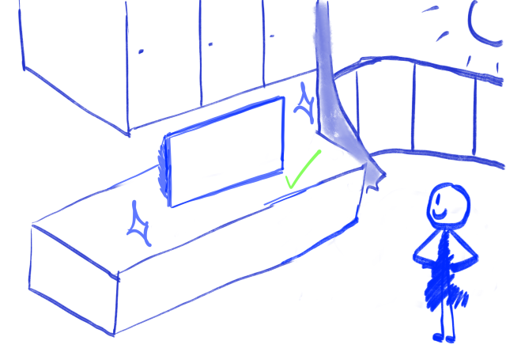

Storyboard 1: The Market Standard
Are massive screens actually the norm? Hover over the hand-drawn graphics below to reveal the data story.

Retail Perception
When shopping for a television, retail stores often prominently display massive 216 cm (85-inch) screens, creating the perception that ultra-large televisions are the modern standard.

The Consumer Dilemma
This marketing strategy pressures consumers into believing they need to purchase the largest available screen, often exceeding the practical space constraints of a standard living room.

The Investigation
To separate retail marketing from actual consumer trends, we analyzed the frequency distribution of all available television sizes to identify what people are genuinely buying.

The Reveal
The frequency distribution chart demonstrates a significant concentration around the 140 cm mark. The heavily marketed 190 cm and 216 cm models are actually extreme market outliers.

The Insight
The data clearly indicates that the 140 cm (55-inch) screen is the statistical mode and the true market standard for typical household living rooms.

The Verdict
Consumers can confidently select a 140 cm television. It represents the market standard and provides an optimal viewing experience without dominating the living space.